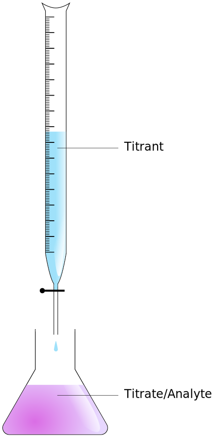
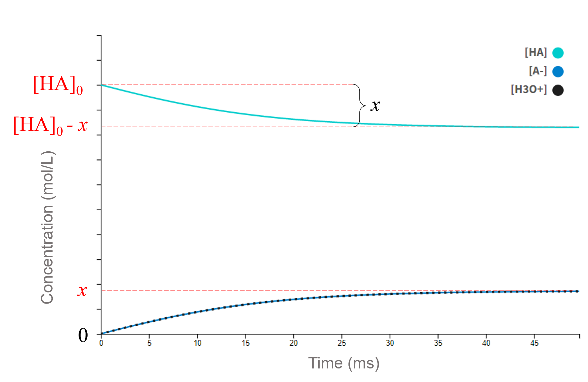

Helpful Information
Constants
- Ionic product of water (at 25° C):
KW = [H3O+][OH-] = 1·10-14 mol2 L-2
- pKa values:
- pKb values:
- Ammonia: 4.75
- Cyanide ion: 4.60
- Methylamine: 3.34
- Aniline: 9.37
Equations
- Acid dissociation constant: Ka =[A-][H3O+] / [HA]
- Base dissociation constant: Kb =[BH+][OH-] / [B]
- Logarithmic form: pKx = -log10(Kx)
- Logarithm of a product: log(a·b) = log(a) + log(b)
- Logarithm of a fraction: log(a/b) = log(a) - log(b)
Illustrations
Titration setupShow

Above: Burette with titrant solution. Below: Erlenmeyer flask with analyte.
Source: Matthias M., CC BY 2.0 | (Originalbild anschauen)
Question 2 graphic representationShow

Optional Hints
Question 2Show
Try to first write the general form of the acid dissociation constant, before converting it to its logarithmic form. In order to derive the desired equation, one must also make an approximation; namely, that the amount of acid dissociating (x) is much smaller than the starting concentration [HA]0.
Question 7aShow
Start by considering your "target" solution, in which the concentrations of the acid and the conjugate base should conform to the Henderson-Hasselbalch equation. There are
Denken Sie zunächst an Ihre Ziellösung, wobei die Konzentrationen der Henderson-Hasselbalch-Gleichung entsprechen sollten. Es gibt unendlich viele Lösungen für dieses Problem, je nachdem, wie konzentriert Sie Ihren Puffer haben wollen. Wenn Sie nicht weiter wissen, setzen Sie Ihre Ziellösung mit 0,100 M Essigsäure und der entsprechenden Menge Acetat an (die Sie berechnen sollen)!
Question 7bShow
Dieses Problem ist mathematisch komplizierter, da das gesamte Acetat als Bestandteil des Puffers durch Reaktion von NaOH und Essigsäure hergestellt werden muss.

Question 8aShow
Behandeln Sie das Problem einfach wie eine Lösung einer schwachen Säure.
Question 8cShow
Bei der Berechnung des pH-Werts am Äquivalenzpunkt kann das System als Lösung einer schwachen Base behandelt werden, wobei pKb bekannt ist. Achten Sie auf die Änderung des gesamten Volumens der Lösung.
Question 9bShow
Überlegen Sie sorgfältig, wie ein pKb-Wert in einer Titrationskurve dargestellt wird.